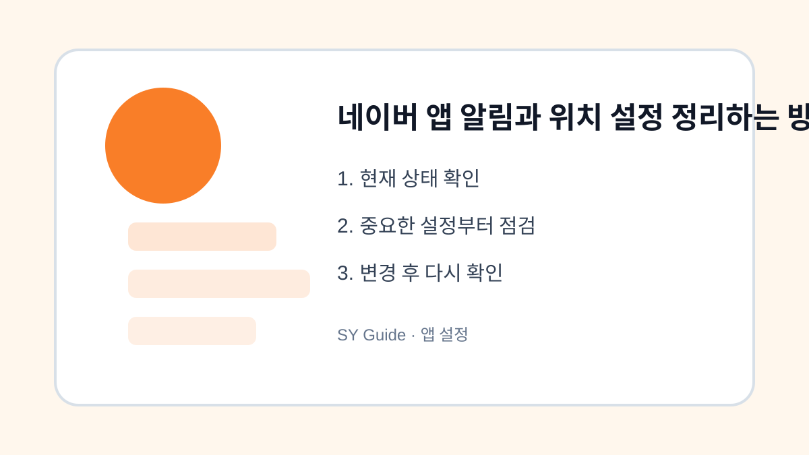

네이버 앱 알림과 위치 설정 정리하는 방법
네이버 앱 알림과 위치 권한을 필요한 서비스 중심으로 정리해 불필요한 알림을 줄입니다.

네이버 앱은 검색, 뉴스, 쇼핑, 날씨, 인증 등 여러 기능이 모여 있어 알림과 권한이 많아지기 쉽습니다. 필요한 알림까지 꺼버리면 불편하지만, 모든 알림을 켜두면 하루 종일 울릴 수 있습니다. 기능별로 나누어 정리하는 방식이 좋습니다.
알림 종류 구분하기
뉴스 속보, 쇼핑 혜택, 카페 댓글, 메일 알림은 성격이 다릅니다. 꼭 필요한 항목은 유지하고 광고성 알림은 줄입니다. 알림이 많은 날에는 앱 내부 설정과 스마트폰 앱 알림 설정을 함께 봐야 합니다.
위치 권한은 사용 중으로 제한
날씨나 지도 기능은 위치가 필요하지만 항상 위치를 허용할 필요는 적습니다. 배터리와 개인정보를 고려하면 앱 사용 중에만 허용하는 방식이 무난합니다. 위치 기반 알림이 필요 없다면 권한을 더 제한해도 됩니다.
| 항목 | 권장 설정 | 이유 |
|---|---|---|
| 뉴스 알림 | 관심 분야만 | 알림 피로 감소 |
| 쇼핑 알림 | 필요 시만 | 광고성 메시지 감소 |
| 위치 권한 | 앱 사용 중 | 배터리와 개인정보 보호 |
앱 설정을 바꾸기 전 마지막 점검
- 앱 내부 알림 설정부터 확인하기
- 스마트폰 앱 알림 권한도 함께 보기
- 쇼핑과 이벤트 알림 줄이기
- 위치 권한을 앱 사용 중으로 제한하기
- 변경 후 필요한 알림이 오는지 하루 확인하기
알림 정리는 생활 패턴에 맞춰 조정하는 과정입니다. 모두 끄기보다 꼭 필요한 알림만 남긴다는 기준으로 접근하면 검색과 생활 정보 기능은 유지하면서 피로를 줄일 수 있습니다.
네이버 앱 설정 실제 상황 예시
네이버 앱 설정 관련 문제는 대부분 한 가지 메뉴만으로 해결되지 않습니다. 알림, 권한, 저장공간, 계정 상태처럼 여러 설정이 연결되어 있기 때문에 현재 상태를 먼저 확인하고 하나씩 바꾸는 방식이 안전합니다. 이렇게 하면 어떤 변경이 실제로 효과가 있었는지도 파악하기 쉽습니다.
네이버 앱 설정에서 피해야 할 실수
실수는 대개 급하게 처리할 때 생깁니다. 저장공간이 부족하다고 바로 삭제하거나, 보안이 걱정된다고 모든 권한을 꺼버리면 필요한 기능까지 멈출 수 있습니다. 변경 전후를 비교하고, 중요한 자료나 계정은 공식 도움말을 확인한 뒤 진행하는 것이 좋습니다.
네이버 앱 설정 관련 설정을 먼저 확인해야 하는 이유
네이버 앱 설정 관련 설정은 단순히 메뉴 하나를 켜고 끄는 문제가 아니라, 실제 사용 흐름에서 어떤 불편을 줄이려는지 먼저 정해야 합니다. 같은 메뉴라도 기기 제조사, 운영체제 버전, 앱 업데이트 상태에 따라 이름이 달라질 수 있으므로 현재 화면을 기준으로 차근차근 확인하는 것이 좋습니다.
네이버 앱 설정에서 자주 생기는 실수
많은 사용자가 바로 삭제하거나 초기화하는 방식으로 문제를 해결하려 하지만, 그 전에 현재 상태를 기록해 두면 되돌리기가 쉽습니다. 알림, 권한, 저장공간, 로그인 상태처럼 서로 연결된 항목은 하나씩 바꾼 뒤 실제로 원하는 결과가 나오는지 확인해야 합니다.
네이버 앱 설정 점검 후 다시 볼 부분
가족 기기나 업무용 계정에서는 본인에게는 사소한 변경도 다른 사람에게 큰 불편이 될 수 있습니다. 변경 전 백업 여부를 확인하고, 중요한 계정이나 자료가 관련되어 있다면 공식 도움말을 함께 보면서 진행하는 편이 안전합니다.